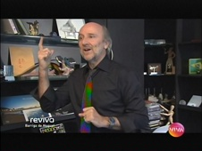
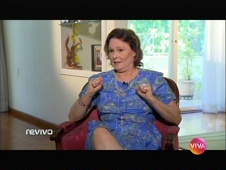

Reviva
| exibido de | 28/11/2011 a 27/01/2014 |
|---|---|
| em cerca de 114 programas | |
| frequência | segunda-feira |
| faixa | nove e quinze da noite |
| horário alternativo | sáb, às 23h45 |
Produção original do Canal Viva que reunia depoimentos de artistas envolvidos nas produções reprisadas no canal, relembrando bastidores e ilustrando curiosidades de novelas, séries e programas em geral, sob a apresentação de Nathália Ramos, posteriormente substituída por Paula Pessoa.
chamada
Locução de Nathália Ramos: "Preparado para reencontrar os grandes sucessos da TV brasileira? Mergulhe no universo da sua novela e minissérie preferida. Reviva: toda segunda, nove e quinze da noite, no Viva, é claro!"
| EPISÓDIO | EXIBIÇÃO | ||
|---|---|---|---|
| 001 | Barriga de Aluguel 1 com Cláudia Abreu, Glória Perez e Patrícia Kogut |
28/11/2011 | |
| 002 | Barriga de Aluguel 2 Os romances vividos pela protagonista Clara; tudo sobre o personagem Lulu; a estreia dos quadros "Essa eu Lembro" e "Por Onde Anda Você"; Uma entrevista com o ator e diretor Wolf Maya. com Wolf Maya, Eri Johnson e Sura Berditchevsky |
05/12/2011 | |
| 003 | Barriga de Aluguel 3 A dança na novela Barriga de Aluguel com Eri Johnson, Cláudia Abreu e Carlota Portella |
12/12/2011 | |
| 004 |  | Barriga de Aluguel 4 Relembrando a abertura e o tema musical de Barriga de Aluguel com Hans Donner e José Augusto |
19/12/2011 |
| 005 | Barriga de Aluguel 5 Uma homenagem a Mário Lago, o doutor Molina, que completaria um século de vida em 2011. com Lady Francisco e Emiliano Queiroz |
26/12/2011 | |
| 006 |  |
Barriga de Aluguel 6 A complexidade da maternidade em uma experiência como a barriga de aluguel: Glória Perez conta quais eram os riscos de abordar um tema tão polêmico 20 anos atrás; como tecnologia e ética avançaram desde então. E quando a vida imita a arte: o Reviva mostra a história de uma mulher que experimentou, na realidade, o drama de Clara e Ana, mas com um final feliz, diferente da novela. com Glória Perez |
02/01/2012 |
| 007 | Barriga de Aluguel 7 No quadro "Essa eu Lembro", a música Feira de Acari; uma noite em um típico bairro charme; e ainda, uma entrevista com DJ Malboro, autor da primeira música funk a tocar em uma novela. com DJ Malboro |
09/01/2012 | |
| 008 | Barriga de Aluguel 8 Ciência vs. Religião: o que católicos, espíritas e judeus pensam sobre o avanço da genética e a reprodução assistida; justiça e ética: quais são os limites do homem no desenvolvimento da medicina; no quadro "Por Onde Anda", uma entrevista com Carla Daniel. com Bernardinho e Carla Daniel |
16/01/2012 | |
| 009 | Top Model 1 Para relembrar a novela Top Model e mergulhar nesse universo, o Reviva foi para a Semana de Moda Carioca, no Fashion Rio: vida de modelo, as tops de hoje falam sobre o lado bom e o lado ruim da profissão; pai surfista: uma entrevista com Nuno Leal Maia, o Gaspar de Top Model. com Nuno Leal Maia |
23/01/2012 | |
| 010 |  | O Tempo e o Vento 1 com Louise Cardoso |
30/01/2012 |